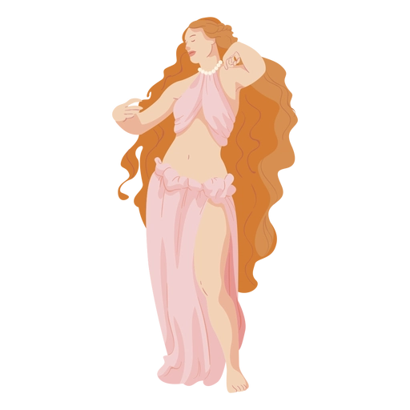

Afrodite (Vênus) é uma antiga deusa do panteão grego, filha de Urano, Zeus e Dione. Deusa da beleza, amor e fertilidade, possui vários títulos e simbolismos. Foi amplamente cultuada em diversas cidades e regiões da Grécia Antiga, com destaque para Chipre, Citera, Esparta, Atenas e Corinto.
Considerada a ilha natal de Afrodite, Pafos em Chipre era um centro importante de seu culto, com templos dedicados a ela, incluindo um dos mais antigos.
Outra ilha associada ao nascimento e culto de Afrodite.
Local de culto importante, especialmente em conexão com seu aspecto de deusa da guerra e da beleza.
O culto a Afrodite era forte em Atenas, com templos e festivais dedicados a ela.
A cidade era conhecida por seu templo a Afrodite, situado no Acrocorinto, e por seu culto associado à prostituição (embora essa associação seja controversa entre estudiosos modernos).
A cidade na Anatólia (atual Turquia) tinha um famoso santuário e uma estátua icônica de Afrodite.
O culto a Afrodite também se espalhou para a Sicília, especialmente em Erice, onde havia um santuário dedicado à deusa.
Eros (jovem deus alado), Maçã, Pomba; Concha do mar, Espelho, Rosas. Seus animais simbólicos podem ser a Rola/Pomba, Pardal, Ganso/Cisne, Lebre; Lince. As plantas que podem a representar são a Macieira, Rosa, Mirto/murta, Anêmona, Alface. Outras plantas/ervas, além de animis e objetos também podem a representar.